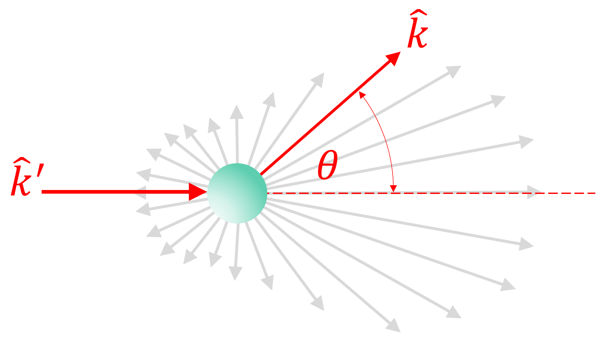

5. Transporte Radiativo
Contents
MEC501 - Manejo y Conversión de Energía Solar Térmica
5. Transporte Radiativo#
Profesor: Francisco Ramírez Cuevas
Fecha: 9 de Septiembre 2022
Coherencia de la luz e interferencia#
Como veremos en las próximas clases, las vibraciones moleculares en la materia son las responsables de emitir radiación en forma de ondas electromagnéticas. El mecanismo es similar, pero inverso, al mecanismo de absorción de luz, el cual es originado por la interacción de ondas electromagnéticas con las vibraciones moleculares (ver clase 3).
Dicho esto, dos moléculas pueden emitir radiación con una pequeña variación en la longitud de onda \(\Delta\lambda\). Esto ocurre porque las vibraciones no están 100% correlacionadas, es decir, existe un grado de aletoriedad en las vibraciones.
Esta aletoriedad en las vibraciones da lugar a una distribución del flujo de radiación emitido por una fuente.

Por ejemplo, consideremos una fuente de luz con una distribución espectral normal, centrada en \(\lambda_0\) y con una desviación estandar \(\pm\sigma_\lambda\lambda_0\), con \(\sigma_\lambda \in [0,1]\). Imaginemos esta fuente como \(N\) emisores, donde cada emisor \(j\) emite ondas electromagnéticas con longitud de onda \(\lambda \pm\Delta \lambda_j\), donde \(\Delta \lambda_j\) es escogido aleatoriamente a partir de la distribución normal.

Asumiendo ondas en el aire en dirección \(\hat{k} = \hat{x}\), el campo eléctrico resultante es:
donde \(k_j = \frac{2\pi}{\lambda \pm\Delta \lambda_j}\), y \(\omega_j = c_0k_j\)
Analicemos el comportamiento de \(\vec{E}_\mathrm{tot} /E_0\) para \(\lambda_0 = 500\) nm
import numpy as np
from numpy.random import normal
import matplotlib.pyplot as plt
c0 = 3E8 # velocidad de la luz (m/s)
lam = 0.5 # longitud de onda (um)
k0 = 2*np.pi/lam # vector de onda (rad/um)
w0 = c0*k0 # Frecuencia angular (rad/s)
def light_packet(kdir, x, t, lam, sig, N):
xx = np.meshgrid(x,np.ones(N))[0]
# Generamos arreglo de ondas aleatorias
dlamj = normal(0, lam*sig,N)
kj = (2*np.pi/(lam + dlamj)).reshape(-1,1)
wj = c0*kj
Erand = np.exp(1j*(kdir*kj*xx-wj*t))
# Sumamos todas las ondas
return np.sum(Erand,axis=0)
def plot_light_packet(N, t, sig):
'''
n: número de ondas generadas
t: tiempo en ns
sig: % de ancho de banda (dlam = sig*lam)
'''
t = t*1E-9 # convertimos ns a s
# recorrido de la onda
x = np.linspace(-2,2,1000) # desde 0 a 4 micrones
E = light_packet(1, x, t, lam, sig, N)
# Graficamos
fig, ax = plt.subplots()
fig.set_size_inches(9, 5)
plt.rcParams['font.size'] = '18'
ax.plot(x,np.real(E), 'k')
ax.set_xlabel('x ($\mu$m)')
ax.set_ylabel('Amplitud $|E|/E_0$')
ax.set_ylim(-N*1.1,N*1.1)
ax.grid()
from ipywidgets import interact
@interact( N=(1,1000,1),
t=(-10,10,0.1),
sig=(0,1,0.01))
def g(N=1000, t=0, sig=0.3):
return plot_light_packet(N,t,sig)
Longitud de coherencia#
Definimos como longitud de coherencia, \(l_c\), a la distancia donde un grupo de ondas electromagnética mantiene correlación entre las fases. Para longitudes mayores a \(l_c\), decimos que la luz es incoherente, es decir, el desface entre las distintas ondas es completamente aleatorio.

La relación entre \(l_c\), la longitud de onda central \(\lambda\) y el ancho de banda \(\Delta\lambda\) está dado, aproximadamente, por la relación:
donde \(n\) es el indice de refracción del medio donde se propaga la luz.
Por ejemplo, para lasers He-Ne (laser rojo) \(l_c\approx 0.2 - 100\) m.
Para radiación emitida por un cuerpo a temperatura \(T\), la longitud de coherencia está dada por:
Así, por ejemplo, la radiación solar (\(T \approx 5800~\mathrm{K}\)) tiene una longitud de coherencia, \(l_c \approx 370~\mathrm{nm}\)
Régimen de trasporte de luz#
Consideremos dos paquetes de onda con una longitud de coherencia \(l_c\), viajando en sentido opuesto.
Podemos ver que ambos paquetes de luz interfieren en \(x = 0\) en un instante \(t\). Al continuar su camino, ambos paquetes de onda recuperan su forma original.
def plot_2light_packet(n, t, sig):
'''
n: número de ondas generadas
t: tiempo en ns
sig: % de ancho de banda (dlam = sig*lam)
'''
t = t*1E-9 # convertimos ns a s
lam = 0.5
# recorrido de la onda
x = np.linspace(-2,2,1000) # desde 0 a 4 micrones
k0 = 2*np.pi/lam
Efw = light_packet( 1, x - x[ 0], t, lam, sig, n)
Ebw = light_packet(-1, x - x[-1], t, lam, sig, n)
# Graficamos
fig, ax = plt.subplots()
fig.set_size_inches(9, 5)
plt.rcParams['font.size'] = '18'
ax.plot(x,np.real(Efw + Ebw), 'k')
ax.set_xlabel('x ($\mu$m)')
ax.set_ylabel('Amplitud $|E|/E_0$')
ax.set_ylim(-n*2.1,n*2.1)
ax.grid()
from ipywidgets import interact
@interact( N=(1,1000,1),
t=(0,20,0.1),
sig=(0,1,0.01))
def g(N=1000, t=2, sig=0.3):
return plot_2light_packet(N,t,sig)
A partir de esto, podemos concluir que los fenómenos de interferencia en películas de capa delgada de espesor \(d\) no serían visibles si \(d > l_c\). En otras palabras, el fenómeno de interferencia solo existe si el paquete de onda interfiere consigo mismo.

En general, para una longitud características \(D\):
Si \(D > l_c\) el transporte de luz es incoherente . En este régimen, podemos ignorar las propiedades oscilatorias de la luz, y analizar el problema como el transporte de pequeños paquetes de onda, o simplemente como partículas.
Si \(D < l_c\), el transporte de luz es coherente. En este régimen debemos considerar las propiedades oscilatorias a partir de las Ecuaciones de Maxwell.
Así, los coeficientes de Fresnel para una película delgada solo son válidos para \(d < l_c\).
Los coeficientes de Fresnel para una interface, en cambio, siempre son válidos.

Igualmente, en medios particulados, los fenómenos de interferencia pueden ocurrir si las partículas están suficientemente cerca y tienen tamaños similares. Llamamos a esto scattering coherente

El fenómeno de scattering coherente da lugar a los denominados colores estructurales presentes en las alas de las aves y mariposas (mas info acá)

Hwang, V. et al. PNAS 118 (4) e2015551118 (2020)

Teoría de transferencia radiativa#
Si el transporte de luz es incoherente, podemos ignorar las propiedades oscilatorias de la luz y analizar el fenómeno óptico como un el transporte de radiación a través de un volumen de control.
La ecuación de transferencia radiativa (RTE por sus siglas en ingles), describe la propagación de la radiancia espectral, \(I_\lambda(\vec{r},\hat{k})\) definida como el espectro del flujo de energía en una posición \(\vec{r}\), y una dirección \(\hat{k}\). En su forma más general, para un problema estacionario:
donde \(f_v\) y \(V_p\) son, respectivamente la fracción de volúmen y el volúmen de las partículas en el medio, y \(P_\mathrm{sca}(\hat{k},\hat{k}')\) es la función de distribución de scattering o función de fase.
Antes de discutir cada término en la RTE, primero analicemos la función de fase. Esta función describe la intencidad del scattering en una dirección \(\hat{k}\) a partir de una onda incidente en dirección \(\hat{k}'\).
En el caso de una esfera, la función de fase depende solo del ángulo relativo entre \(\hat{k}\) y \(\hat{k}'\). En otras palabras, para esferas \(P_\mathrm{sca} (\theta)\), donde \(\cos\theta = \hat{k}\cdot\hat{k}'\)
{kind=link}
Notar que \(C_\mathrm{sca}\) y \(P_\mathrm{sca}\) están relacionados por
Con esto en mente, ahora podemos discutir el significado de los términos en la RTE:
El primer término representa el cambio de \(I_\lambda(\vec{r},\hat{k})\) a través volumen diferencial. Por ejemplo, en el caso unidimencional en dirección \(\hat{k} = \hat{x}\), tenemos:
El segundo término representa la pérdida de energía radiativa, por extinción \(\left(\frac{f_v}{V_p}C_\mathrm{ext}\right)\) y absorción en el material material (\(2\kappa k_0\)), respectivamente.Recordemos que la extinción representa la energía absorbida por las partículas + la energía de scattering en direcciónes distintas a \(\hat{k}\), es decir \(C_\mathrm{ext}= C_\mathrm{abs} + C_\mathrm{sca}\).
El tercer término representa la ganancia de energía radiativa produco del scattering inducido por radiación incidente en dirección \(\hat{k}'\). Este término representa el fenómeno de scattering múltiple.
Soluciones de la RTE#
La ecuación de transferencia radiativa permite explicar de forma fenomenológica el transporte de radiación en un medio particulado. Debido a su complejidad, existen pocas soluciones analíticas. En esta sección describiremos las tres más conocidas.
Película de material sin partículas (Reflectividad y Transmisividad incoherente)#
En el caso de un medio sin partículas solo debemos considerar el primer término de la RTE.
Para el caso particular de un material de espesor \(t_\mathrm{film}\) e índice de refracción \(N = n + \kappa\), rodeado por un medio con índice de refracción \(N_0\), derivamos las siguientes relaciones de reflectividad y tranmisividad para luz incoherente:
donde \(R_0\) y \(T_0\) corresponden, respectivamente, a la reflectividad y transmisividad en la interface \(N_0 / N_1\)
En el siguiente ejemplo, utilizamos la función incoh_multilayer de la libreria empylib.waveoptics. Esta función es más general que la ecuación anterior y permite determinar \(R_\mathrm{incoh}\) y \(T_\mathrm{incoh}\) para arreglos multicapas.
En este caso, evaluaremos una película de sílice de espesor \(1~\mu\mathrm{m}\), sobre un sustrato con íncide de refracción \(N_\mathrm{back} = 4.3\), y con aire en la superficie \(N_\mathrm{front} = 1.0\). El espectro de longitudes de onda \(\lambda\in[0.3,0.8]~\mu\mathrm{m}\) y el ángulo de incidencia \(\theta_i = 30°\). Para comparar, determinaremos \(R\) y \(T\) para el caso de luz coherente.
import numpy as np
import empylib.waveoptics as wv
import empylib.nklib as nk
lam = np.linspace(0.3,0.8,100) # espectro de longitudes de onda (um)
theta = np.radians(30) # ángulo de incidencia
Nfront = 1.0 # índice de refracción medio superior
N1 = nk.SiO2(lam) # índice de refracción capa delgada
Nback = 4.3 # índice de refracción medio inferior
N = (Nfront, N1, Nback) # indices de refracción (above, mid, below)
d = 1.0 # espesor capa intermedia (um)
# caso luz incoherente
Rp_incoh, Tp_incoh = wv.incoh_multilayer(lam,theta, N, d, pol='TM')
# caso luz coherente
Rp, Tp = wv.multilayer(lam,theta, N, d, pol='TM')[:2]
---------------------------------------------------------------------------
ModuleNotFoundError Traceback (most recent call last)
Input In [5], in <cell line: 2>()
1 import numpy as np
----> 2 import empylib.waveoptics as wv
3 import empylib.nklib as nk
5 lam = np.linspace(0.3,0.8,100) # espectro de longitudes de onda (um)
File /mnt/c/Users/francisco.ramirez.c/OneDrive - Universidad Adolfo Ibanez/Teaching_courses/Manejo_y_Conversion_Energia_Solar_Termica/material_catedra/5_TransporteRadiativo/empylib/__init__.py:6, in <module>
4 from . import miescattering
5 from . import waveoptics
----> 6 from . import rad_transfer
8 # standard constants
9 e_charge = 1.602176634E-19 # C (elementary charge)
File /mnt/c/Users/francisco.ramirez.c/OneDrive - Universidad Adolfo Ibanez/Teaching_courses/Manejo_y_Conversion_Energia_Solar_Termica/material_catedra/5_TransporteRadiativo/empylib/rad_transfer/__init__.py:2, in <module>
----> 2 from .rad_transfer import *
File /mnt/c/Users/francisco.ramirez.c/OneDrive - Universidad Adolfo Ibanez/Teaching_courses/Manejo_y_Conversion_Energia_Solar_Termica/material_catedra/5_TransporteRadiativo/empylib/rad_transfer/rad_transfer.py:19, in <module>
17 import miescattering as mie
18 import waveoptics as wv
---> 19 import iadpython as iad
21 def T_beer_lambert(lam,theta, tfilm, Nlayer,fv,D,Np):
22 '''
23 Transmittance from Beer-Lamberts law for a film with spherical particles
24
(...)
57
58 '''
ModuleNotFoundError: No module named 'iadpython'
fig, ax = plt.subplots()
fig.set_size_inches(7, 5)
plt.rcParams['font.size'] = '16'
# Graficamos el flujo de energía
plt.plot(lam,Rp,'--r',label='$R_\mathrm{TM}$ (coh)')
plt.plot(lam,Tp,'--b',label='$T_\mathrm{TM}$ (coh)')
plt.plot(lam,Rp_incoh,'-r',label='$R_\mathrm{TM}$ (incoh)')
plt.plot(lam,Tp_incoh,'-b',label='$T_\mathrm{TM}$ (incoh)')
plt.title('arreglo 1.0/1.5/4.3')
plt.xlabel('Longitud de onda ($\mu$m)')
plt.ylabel('Refletividad / Transmisividad')
plt.legend()
plt.show()
En la figura, para el caso de luz coherente, notamos oscilaciones en \(R\) y \(T\) producto de los fenómenos de interferencia. En el caso de luz incoherente, el fenómeno de interferencia desaparace.
Película de material con baja concentración de partículas (Ley de Beer-Lambert)#
Definimos el camino libre medio de scattering, como \(\Lambda_\mathrm{sca} = \left(f_v C_\mathrm{sca}/V_p\right)^{-1}\). Este parametro representa la distancia promedio que recorre la luz entre eventos de scattering.
Si \(\Lambda_\mathrm{sca}\) es mayor que el espesor del material, \(t_\mathrm{film}\), la probabilidad de que ocurran más de un evento scattering es despreciable, y decimos que el scattering es de primer orden. En este caso, el tercer término de la RTE es despreciable y la radiación solo pierde energía por absorción del material o extinción inducida por las partículas.
La solución a esta ecuación se conoce como la ley de Beer-Lambert. Mediante esta aproximación podemos deducir las componentes total y especular de la transmitancia:
donde, \(T_0\) es la transmisividad incoherente del material sin incrustaciones.
Podemos utilizar la ley de Beer-Lambert para analizar, de forma aproximada, el efecto del color del cielo durante el día y en la tarde.
El color del cielo está dado por la componente difusa. Así calculamos \(T_\mathrm{dif} = T_\mathrm{tot} - T_\mathrm{spec}\).
Consideremos una atmosfera compuesta de aire (\(N_h = 1.0\)) y una pequeña concentración (\(f_v = 1\times 10^{-6}~\%\)) de partículas de 10 nm de diámetro e índice de refracción \(N_p = 1.5\). El espesor de la atmosfera es \(t_\mathrm{atm} = 100~\mathrm{km}\)
import empylib.rad_transfer as rt
import empylib.nklib as nk
import numpy as np
import matplotlib.pyplot as plt
from empylib.ref_spectra import AM15
from empylib.ref_spectra import color_system as cs
cs = cs.hdtv
def plot_atmosphere(theta_sun):
fig, ax = plt.subplots()
fig.set_size_inches(8, 6)
plt.rcParams['font.size'] = '18'
tatm = 100E9 # espesor de la atmósfera 100 km
lam = np.linspace(0.38,0.78,100) # espectro de longitudes de onda
theta = np.radians(theta_sun) # posición del sol en radianes
N = (1.0,1.0,1.0) # indice de refracción superior, intermedio e inferior
fv = 1E-8 # fracción de volúmen de las partículas
D = 0.010 # diámetro de las partículas
Np = 1.5*np.ones(len(lam)) # índice de refracción de las partículas
Ttot, Tspec = rt.T_beer_lambert(lam,theta,tatm,N,fv,D,Np)
Tdif = Ttot - Tspec
ax.plot(lam,Tdif,'-k',label = 'Tdif')
ax.set_xlabel('Longitud de onda ($\mu$m)')
ax.set_ylabel('Transmisividad')
ax.set_title(r'Posición del sol, $\theta_\mathrm{sun}$=%.1f°'% (theta_sun))
ax.set_ylim(0,1.05)
D = 0.25
ax2 = fig.add_axes([0.11,0.15, D, D])
Irad = Tdif*AM15(lam)
html_rgb = cs.spec_to_rgb(lam*1E3, Irad, out_fmt='html')
Circle = plt.Circle((0, 0), D, color=html_rgb)
ax2.add_patch(Circle)
ax2.set_aspect('equal')
ax2.set_xlim(-D*1.2,D*1.2)
ax2.set_ylim(-D*1.2,D*1.2)
ax2.set_xticks([])
ax2.set_yticks([])
ax2.set_facecolor('k')
from ipywidgets import interact
@interact(theta_sun=(0,89.99,0.1))
def g(theta_sun=0):
return plot_atmosphere(theta_sun)
Pelicula de material particulado (simulaciones de transferencia radiativa)#
Este caso corresponde a materiales con \(\Lambda_\mathrm{sca} > t_\mathrm{film}\). En este caso los eventos de scattering se producen más de una vez, y decimos que estámos en un régimen de scattering múltiple. Como resultado, los tres términos de la RTE son relevantes y debemos resolver la ecuación mediante simulación computacional.
Consideremos un material de sílice de espesor \(t_\mathrm{film} = 5~\mathrm{mm}\). Evaluaremos los colores de este material en transmisión y reflección para luz incidente normal a la superficie en función de la concentración y el diámetro de las partículas. Utilizamos la función ad_rad_transfer de la librería empylib.rad_transfer
import empylib.rad_transfer as rt
import empylib.nklib as nk
import empylib.miescattering as mie
import numpy as np
import matplotlib.pyplot as plt
def plot_glass_silver(fv,D):
lam = np.linspace(0.3,1.0,100)
theta = np.radians(0) # 30 grados en radianes
tfilm = 5E3 # espesor en micrones
N = (1.0,nk.SiO2(lam),1.0) # indice de refracción superior, intermedio e inferior
fv = fv*1E-10 # fracción de volúmen de las partículas
D = D*1E-3 # diámetro de las partículas
Np = nk.silver(lam)
qext, qsca = mie.scatter_efficiency(lam,N[1],Np,D)[:2]
qabs = qext - qsca
Rtot, Ttot = rt.ad_rad_transfer(lam,tfilm,N,fv,D,Np)
fig, ax = plt.subplots(1,3)
fig.set_size_inches(20, 5)
plt.rcParams['font.size'] = '16'
ax[0].plot(lam,qsca,'-r',label='$C_\mathrm{sca} A_c$')
ax[0].plot(lam,qabs,'-b',label='$C_\mathrm{abs} A_c$')
ax[0].set_xlabel('Longitud de onda ($\mu$m)')
ax[0].set_ylabel('Eficiencia transversal')
ax[0].set_title('Partícula de plata (D=%.0f nm)' % (D*1E3))
ax[0].legend()
ax[0].set_ylim(0,10)
ax[1].plot(lam,Rtot,'-r',label = 'Rtot')
ax[1].plot(lam,Ttot,'-b',label = 'Ttot')
ax[1].set_xlabel('Longitud de onda ($\mu$m)')
ax[1].set_ylabel('Transmisividad')
ax[1].set_title(r'Sílice con plata (fv = %.1e %%)' % (fv*100) )
ax[1].legend()
ax[1].set_ylim(0,1)
D = 0.20
Irad = Ttot*AM15(lam)
html_rgb = cs.spec_to_rgb(lam*1E3, Irad, out_fmt='html')
Circle = plt.Circle((0, 0), D, color=html_rgb)
ax[2].add_patch(Circle)
ax[2].annotate('Luz Trasera', xy=(0, 0), va='center', ha='center')
Irad = Rtot*AM15(lam)
html_rgb = cs.spec_to_rgb(lam*1E3, Irad, out_fmt='html')
Circle = plt.Circle((D*1.2*2, 0), D, color=html_rgb)
ax[2].add_patch(Circle)
ax[2].annotate('Luz Frontal', xy=(D*1.2*2, 0), va='center', ha='center')
ax[2].set_aspect('equal')
ax[2].set_xlim(-D*1.2,D*1.2*3)
ax[2].set_ylim(-D*1.2,D*1.2)
ax[2].set_xticks([])
ax[2].set_yticks([])
ax[2].set_facecolor('k')
plt.subplots_adjust(wspace=0.3)
from ipywidgets import interact
@interact(fv=(1,100,1), D = (10,200,1))
def g(fv=30, D = 140):
return plot_glass_silver(fv,D)
Cuando la concentración de partículas es densa, el medio se vuelve opaco. Este régimen se denomina scattering difuso y permite explicar, entre otras cosas, el color de las nubes o la pintura blanca
Un ejemplo interesante corresponde a la leche. En términos simples, la leche es una emulsión formada por pequeñas partículas de grasa dispersas en un medio acuoso.
Como aproximación, consideremos un medio de espesor \(1\) cm, compuesto por agua \(N_h = 1.3\) y pequeñas partículas esféricas de aceite \(N_p = 1.5\). La emulsión considera un 60% de partículas de aceite por volumen.
%%capture showplot
# import empylib.nklib as nk
import numpy as np
import empylib.rad_transfer as rt
# Solo modificar estos parámetros
#---------------------------------------------------------------
lam = np.linspace(0.3,1.0,100) # espectro de longitudes de onda
tfilm = 10 # espesor en mm
Nh = 1.3 # indice de refracción del agua
fv = 0.6 # fracción de volúmen de los poros
D = 1.5 # diámetro de los poros (micrones)
Np = 1.5*np.ones(lam.shape) # índice de refracción partículas de aceite
#---------------------------------------------------------------
Rtot, Ttot = rt.ad_rad_transfer(lam,tfilm,N,fv,D,Np)
fig, ax = plt.subplots()
fig.set_size_inches(7, 5)
plt.rcParams['font.size'] = '16'
ax.plot(lam,Rtot,'-r',label='R')
ax.plot(lam,Ttot,'-b',label='T')
ax.set_xlabel('Longitud de onda ($\mu$m)')
ax.set_ylabel('Reflectividad / Transmisividad')
ax.set_title(r'Leche (fv = %.0f %%)' % (fv*100))
ax.legend()
ax.set_ylim(0,1)
plt.show
showplot()
<function matplotlib.pyplot.show(close=None, block=None)>
Como vemos la alta concentración de partículas hace que la refletividad y transmisividad se vuelvan casi uniformes para todas las longitudes de onda. El espectro, así, toma un color blanco frente a una fuente de luz blanca.
Referencias#
Chen G. Chapter 5 - Energy Transfer by Waves in Nanoscale energy transport and conversion, 1st Ed, Oxford University Press, 2005